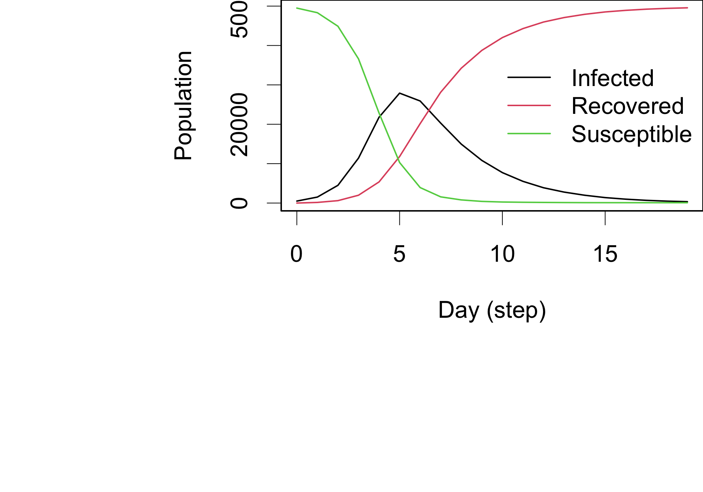

Machine Learning Sandwich for Agent-Based Models
Automatic calibration and post-processing adjustment for ABMs
Motivation: Agent-Based Models in Science and Policy
Agent-Based Models [ABMs] are an important tool for scientific research and policy-making:
- For scenario modeling: “What if we do X?”
- For forecasting: “How many cases will we have in the next week?”
Calibration can be time-consuming: grid search, Markov models, etc.
There’s no consensus on the best calibration approach.
ABMs (and models in general) are limited in their predictive power.

Schematic of compartmental and ABMs used by the US Centers for Disease and Control Prevention during a Measles Outbreak Response CDC (2024).
Machine Learning Sandwich for ABMs

How to MechML: Correcting prediction errors

Train a model that predicts ABM forecast errors. The model takes the following form:
\[ Loss(\boldsymbol{\omega}): \left\{\mathcal{M}(\boldsymbol{\theta}), \boldsymbol{x}\right\} \to \widehat{\boldsymbol{\varepsilon}} \equiv \left\lVert \widehat{\boldsymbol{\varepsilon}} - f\left(\boldsymbol{\omega}, \mathcal{M}(\boldsymbol{\theta}), \boldsymbol{x}\right)\right\rVert{}_p, \]
where \(\widehat{\boldsymbol{\varepsilon}}\equiv \left(\mathcal{M}(\boldsymbol{\theta}) - y_{obs}\right)\) ABM forecast error, \(\boldsymbol{y}_{obs}\) is the observed data, \(f(\cdot)\) is a non-linear function, \(\boldsymbol{x}\) are additional features for the model, and \(\boldsymbol{\omega}\) is an array of weights associated with the ML o predict \(\boldsymbol{\varepsilon}\).
How to MechML: Predictions as feature

Use the ABM predictions as a feature in the ML model. The model takes the following form:
\[ Loss(\boldsymbol{\omega}) \equiv \left\lVert \boldsymbol{y}_{obs} - f\left(\boldsymbol{\omega}, \mathcal{M}(\boldsymbol{\theta}), \boldsymbol{x}\right)\right\rVert{}_p, \]
How to MechML: Mechanistic penalty

Use a mechanistic penalty in the ML loss function. The model takes the following form:
\[ Loss(\boldsymbol{\omega}) \equiv \left\lVert \boldsymbol{y}_{obs} - f\left(\boldsymbol{\omega}, \boldsymbol{x}\right)\right\rVert{}_p + \lambda \left\lVert f\left(\boldsymbol{\omega}, \boldsymbol{x}\right) - \mathcal{M}(\theta)\right\rVert{}_p, \]
where \(\lambda\) is a hyperparameter that controls the weight of the mechanistic penalty.
Calibration : CNN Architecture